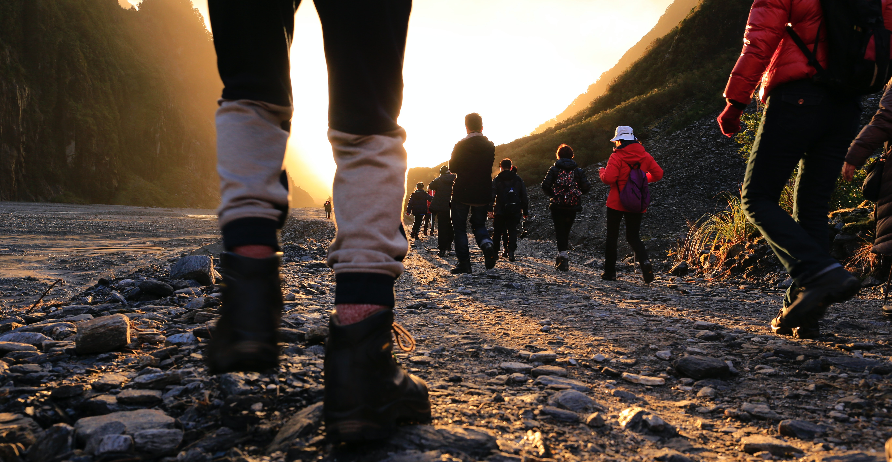

Early attempts to ascend mountain peaks were inspired by other
than sporting motives: to build altars or to see if spirits
actually haunted once-forbidden heights, to get an overview of
one’s own or a neighbouring countryside, or to make meteorological
or geological observations. Before the modern era, history
recorded few attempts to ascend mountain peaks for the mere sake
of the accomplishment. During the 18th century a growing number of
natural philosophers—the scientists of their day—began making
field trips into the Alps of Europe to make scientific
observations. The area around Chamonix, France, became a special
attraction to those investigators because of the great glaciers on
the Mont Blanc chain.
Mountaineering differs from other outdoor
sports
in that nature alone provides the field of action—and just about
all of the challenges—for the participant. Climbing mountains
embodies the thrills produced by testing one’s courage,
resourcefulness, cunning, strength, ability, and stamina to the
utmost in a situation of
inherent
risk. Mountaineering, to a greater degree than other sports, is a
group activity, with each member both supporting and supported by
the group’s achievement at every stage. For most climbers, the
pleasures of mountaineering lie not only in the “conquest” of a
peak but also in the physical and spiritual satisfactions brought
about through intense personal effort, ever-increasing
proficiency, and contact with natural grandeur.

You’ll Surely Enjoy This
Experience
Mountaineering, also called mountain climbing, the sport of
attaining, or attempting to
attain, high points in mountainous regions, mainly for the pleasure
of the climb. Although
the term is often loosely applied to walking up low mountains that
offer only moderate
difficulties, it is more properly restricted to climbing in
localities where the terrain and
weather conditions present such hazards that, for safety, a certain
amount of previous
experience will be found necessary. For the untrained,
mountaineering is a dangerous
“Climb the mountain not to plant your flag, but to embrace the
challenge, enjoy the air and behold the view. Climb it so you can
see the world, not so the world can see you.” - David McCullough Jr.
History| Alpine Ascents history.
History
Overview
The Alpine Ascents is an outdoor community teaching you skills to explore the outdoors safely and responsibly. Founded in 1906, we've been
getting people of all ages outside for over 100 years. We are passionate about building a community of people who are knowledgeable and care about the outdoors.
We work to protect the outdoor experience for generations to come.
Our mission is to enrich the community by helping people explore, conserve learn about, and enjoy the lands and waters of the Pacific Northwest and beyond.
History
The Alpine Ascents played a pivotal role in the growth of the greater outdoor community in the Pacific Northwest.
Many of today's recreational resources came from actions and activities of early Alpine Ascents members, including the creation of trails, wilderness areas,
and national parks. Our members were also critical in the development of alpine skiing in the Cascades, climbing courses in the U.S., and founding the national
Mountain Rescue Association.
Historical records and artififacts
We have a rich catalog of historical items available online:
Artifacts
Collections
Digitals Archives
Maps
Orals Histories
Periodicals
You can also explore our club records in the UW Special Collections or view our unique look at history through our Video our entire history archive managed by Volunteer Historian Lowell Skoog.
Northwest inging Journal
The mission of the Northwest Alpine Ascents Journal is to be an edited, permanent, annual record of Alpine Ascents in the Pacific Northwest. The journal documents the events, people, history and spirit of climbing and other mountain sports in this region. The journal is published by volunteers from the Alpine Ascents community in collaboration with The Alpine Ascents and is spearheaded by Lowell Skoog.
Access the Northwest Alpine Ascents Journal to view outdoor pursuits dating back to 2004.
The Alpine Ascents Library
The Alpine Ascents library is currently being reorganized and restructured by our History committee. Our vast collection of historical items has been combed through with an eye toward retaining items reflecting The Alpine Ascents core activities in the Pacific Northwest (climbing, hiking, skiing, conservation, etc.). Titles outside of this scope are being donated to an appropriate home, and the titles within this scope are being retained in various forms. Eventually, we hope to make all of the titles accessible to researchers, but currently most of them are in boxes waiting to be re-shelved and re-cataloged. This process is being carried out by volunteers with limited time to devote to the project and will be completed when they have time.
Many of the collection remains at the Seattle Program Center. The Alpine Ascents Annuals and monthly Bulletins are held at The Alpine Ascents Seattle Program Center in the upstairs archives. They are neatly arranged in bookcases, and available for research use during regular business hours, Monday-Friday, 9-5pm. An incomplete catalog of the archives can be found here. For historical membership collection, click here.
Other items are being stored with the University of Washington Special Collections. The Alpine Ascents has a longstanding relationship with the UW, which houses our area’s largest collection of Pacific Northwest Alpine Ascents information. Alpine Ascents members have access to the collection, which includes almost all of the Alpine Ascents Annuals, through a reciprocal agreement with UW Special Collections. To access those documents, visit the Special Collections website or visit them in person at Allen Library South, University of Washington, Seattle. Contact Nicolette Bromberg at for more information.
The Olympia Branch also maintains their own library. Learn more on the
We are not currently accepting book donations for the library or any of our courses. Please reach out to your local library to donate any Alpine Ascents guidebooks or narratives. If you believe you have something of historical significance please reach out to the history chair Lowell Skoog.
Summit Registers
The mission of the Northwest Alpine Ascents Journal is to be an edited, permanent, annual record of Alpine Ascents in the Pacific Northwest. The journal documents the events, people, history and spirit of climbing and other mountain sports in this region. The journal is published by volunteers from the Alpine Ascents community in collaboration with The Alpine Ascents and is spearheaded by Lowell Skoog.
Access the Northwest Alpine Ascents Journal to view outdoor pursuits dating back to 2004.